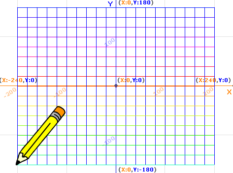
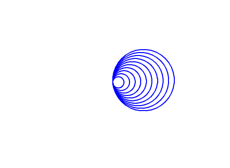
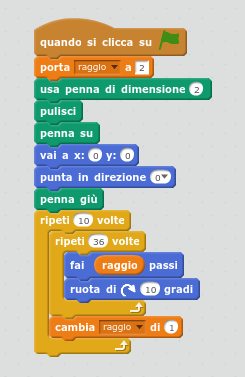
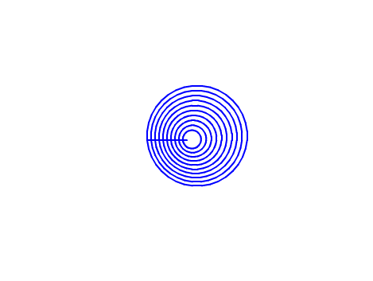
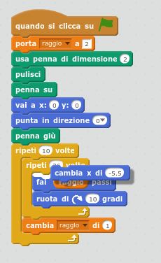

Progetti di geometria e disegno procedurale¶
Indice
Disegno di una griglia di linee ortogonali¶
Impostare i comandi base per il disegno:
puliscipennaimposta colore inizialefacoltativoimposta dimensione inizialefacoltativo
Disegnare una linea orizzontale con il comando vai a X: Y:.
Il valore della X (ascissa) degli estremi delle linee parallele orizzontali è costante mentre il valore della Y (ordinata) cambia in modo costante del passo di pixel scelto.
Per disegnare una serie di righe parallele servirà quindi:
- creare una variabile per cambiare il valore della Y (i.e. modificaY)
- eseguire un ciclo
ripeti N volteper disegnare N righe orizzontale - inserire il comando
vai a X: Y:utilizzando per la X, per esempio, i valori -200 e 200 e la Y con la variabile creata - aumentare o diminuire il valore della variabile modificaY
Completare realizzando il codice per disegnare le righe verticali.
Per farlo è possibile duplicare lo sprite oppure aggiungere il codice in coda a quello appena scritto. Nel primo caso il disegno delle linee sarà contemporaneo, nel secondo caso prima verranno disegnate le righe orizzontali ed in seguito le verticali.
Personalizzare il disegno aggiungendo comandi di cambia colore o cambia dimensione penna.
Volendo si può nascondere lo sprite per non nascondere parte della griglia.
Disegno di cerchi tangenti¶
 Disegno di cerchi concentrici¶
Per disegnare cerchi non più tangnti ma concentrici, prima di disegnare ogni nuovo cerchio è necessario spostare il punto da cui si inizia a disegnare.
 Prova a sposta il comando aggiunto all’interno del ciclo che disegna la circonferenza.
Cosa succede? Riduci il valore da -5 a -1 o altro.